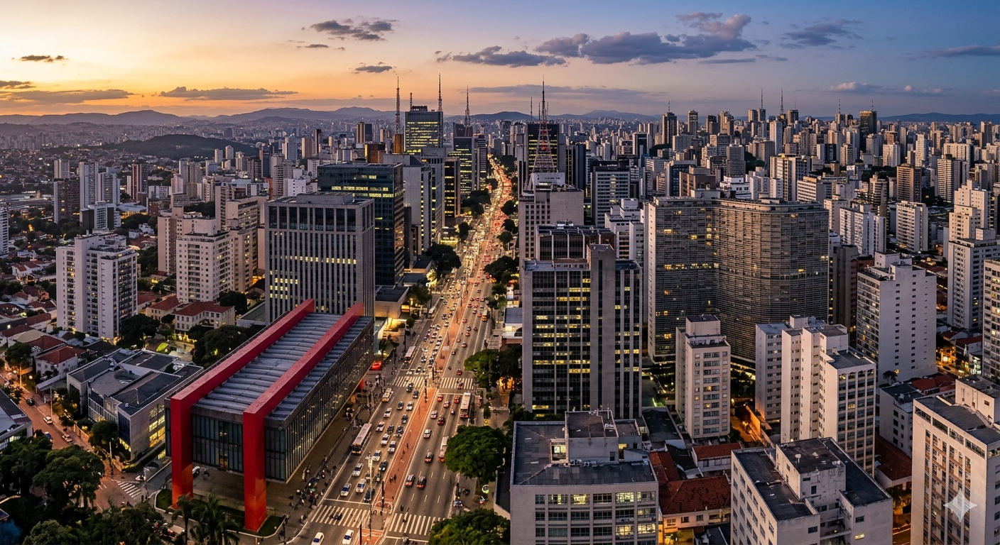
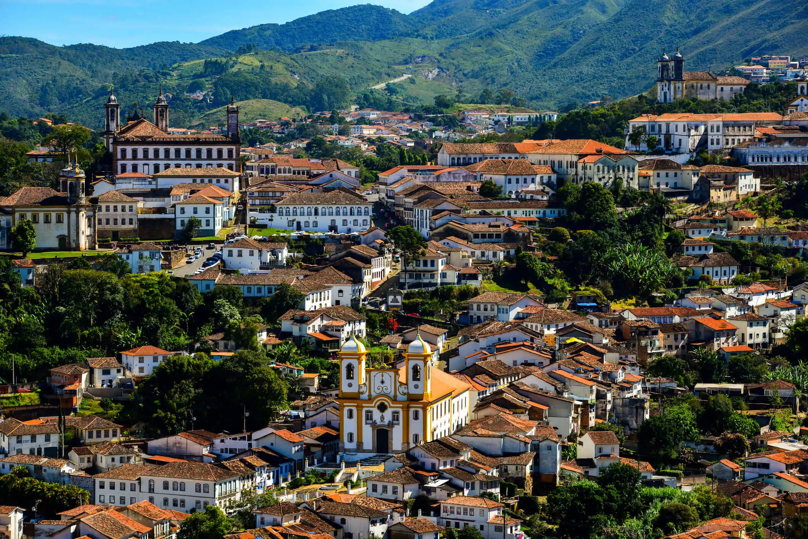
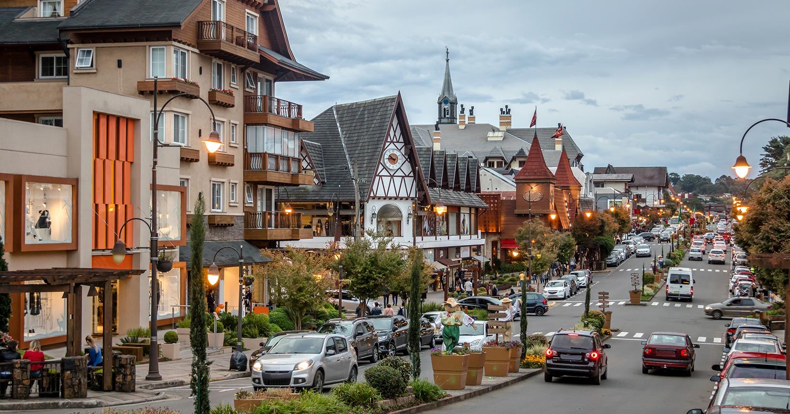
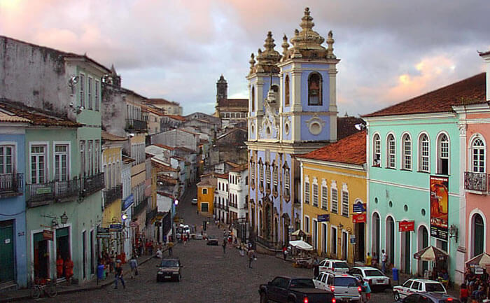
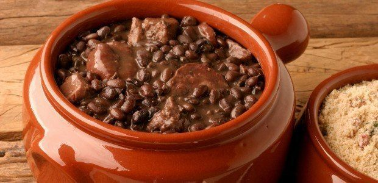
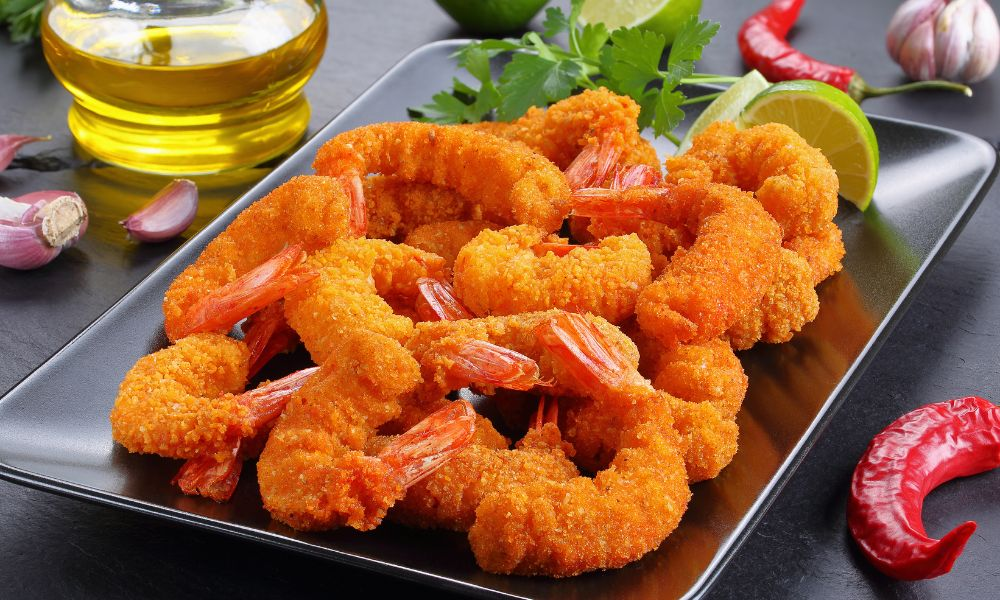

🍽️ Nossas Culinárias Regionais










🍽️ Virado à Paulista
O Virado à Paulista é considerado o prato típico mais emblemático da cidade de São Paulo. Sua origem remonta aos bandeirantes e tropeiros, que precisavam de uma refeição calórica e de longa duração. É uma refeição completa que inclui arroz, tutu de feijão, couve refogada, banana à milanesa, ovo frito e diversas partes do porco (bisteca, torresmo, linguiça e bacon).
Este prato é facilmente encontrado em restaurantes tradicionais da cidade, especialmente nas regiões do Centro e nos chamados "bares de verdade".
🍲 Feijoada Carioca
A Feijoada Carioca é um dos pratos mais emblemáticos da cidade do Rio de Janeiro. É preparada com feijão preto cozido lentamente com carnes salgadas (carne seca, paio, lingüiça, costela e pé de porco), resultando em um caldo encorpado e aromático.
A feijoada é tradicionalmente servida às quartas e sábados acompanhada de arroz branco, couve refogada, farofa, laranja, torresmo e uma caipirinha bem gelada.
🧀 Pão de Queijo Mineiro
O Pão de Queijo Mineiro é a iguaria mais famosa de Minas Gerais. Feito com polvilho, queijo minas, ovos, leite e óleo, é naturalmente sem glúten. Crocante por fora e macio por dentro, é servido no café da manhã ou lanche da tarde com um café fresquinho.
🦐 Sequência de Camarão
A Sequência de Camarão é o prato mais emblemático de Florianópolis. Um banquete que apresenta o camarão preparado de diferentes formas: ao alho e óleo, à milanesa e ao bafo. Acompanham arroz, batata frita, salada e pirão de peixe.
🍫 Fondue Gaúcho
O Fondue é o prato mais emblemático e romântico de Gramado. Herdado da colonização europeia, a experiência inclui três etapas: Fondue de Queijo, Fondue de Carne e Fondue de Chocolate. Servido com pães, frutas, marshmallows e molhos especiais.
🥘 Acarajé
O Acarajé é o prato mais emblemático e sagrado de Salvador. Bolinho de feijão-fradinho frito em azeite de dendê, recheado com vatapá, caruru, camarão seco, vinagrete e pimenta. Vendido por baianas de tabuleiro, é Patrimônio Cultural Imaterial do Brasil.